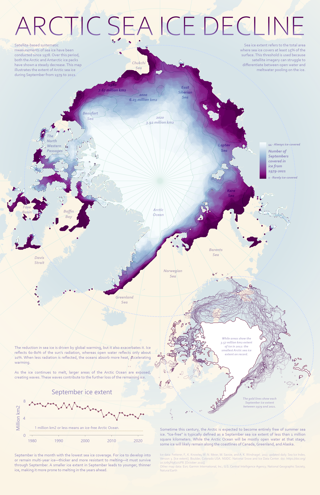
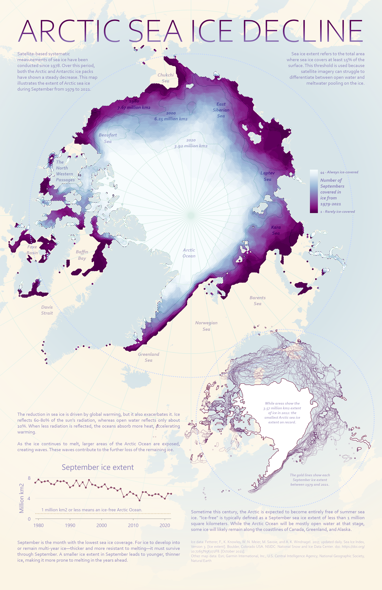

Emese Gojdar
Welcome to my page! I am a geographer with a BSc degree, currently pursuing a double master’s degree in the Copernicus Master in Digital Earth program, a joint initiative between the University of Salzburg and Palacký University Olomouc. My interests lie in environmental protection, sustainability, and climate change, combined with my passion for arts, digital visualization, and illustration. I strive to merge scientific knowledge with creative expression to contribute to a more sustainable and visually informed future.
Experience
GIS ENGINEER - 2022 Feb - 2024 Aug
Mott MacDonald Hungary Ltd.
GIS ANALYST, ORGANIZER - 2020 Oct -2022 Jan
Ulyssys Software Development and Consulting Ltd.
INTERNSHIP- 2019 Jun - 2019 Dec
University of Szeged - OSL Research Laborator
Volunteering
GIS TECHNICIAN & SOCIAL MEDIA ASSISTANT- 2023 Oct - 2024 Jan
beeco Ltd.
Education
Paris Lodron University of Salzburg - 2024 - present
MSc., double degree, (EMJM) Copernicus Master in Digital Earth - Geoinformatics & Earth Oberservation - GeoVisualization & GeoCommunication
University of Szeged Faculty of Science and Informatics - 2017 - 2021
Bsc., Geography - Geoinformatics
School of Business Szeged - 2016 - 2017
Certificate of Professional Qualification - Tourism and Travel Services
University of Szeged Juhász Gyula Faculty of Education - 2015 - 2016
BA., Visual Representation (Incomplete - 2 semesters completed)
Gallery
 


Blog
Big Data from Space 2023: BiDS Vienna
Last year, in November 2023, I followed one of my favorite "passion" and traveled to Vienna for the ESA Big Data from Space conference.
More...Sinergise Summer School 2023 - Ljubljana
In the summer of 2023, I had the opportunity to participate in the Summer School organized by Sinergise...
More...ISSonVIS 2025, International Spring School on Visualization
At the beginning of April, we participated in the two-day intensive SpringSchool...
More....png "GitHub")